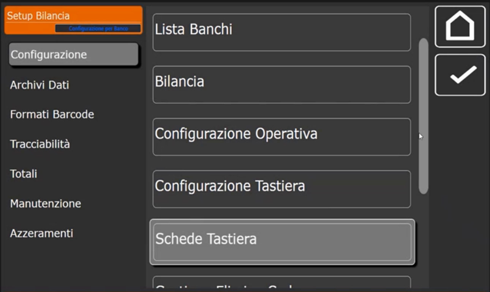
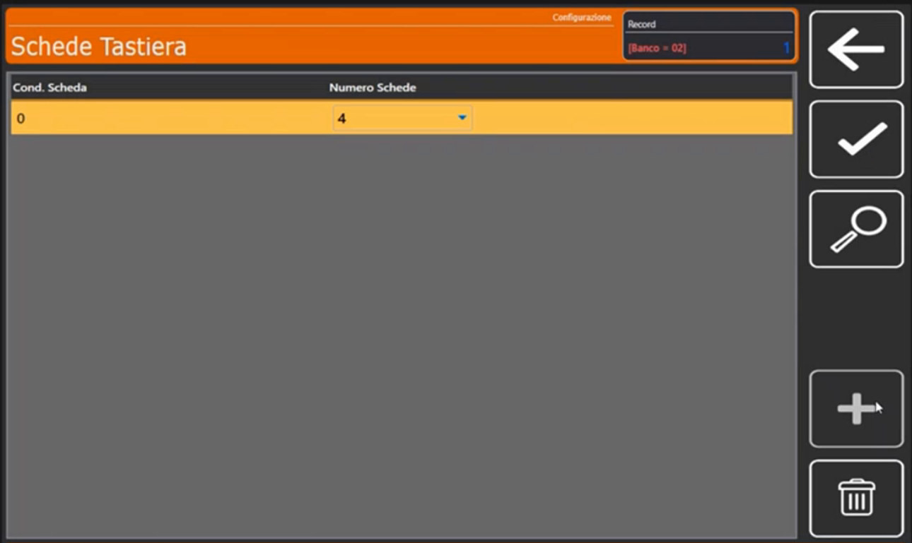
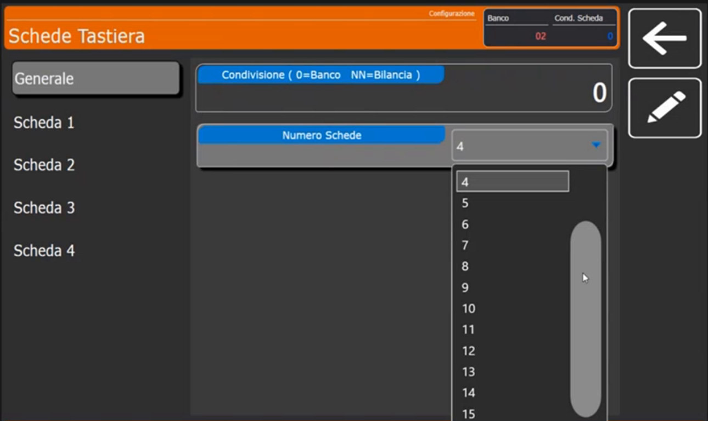
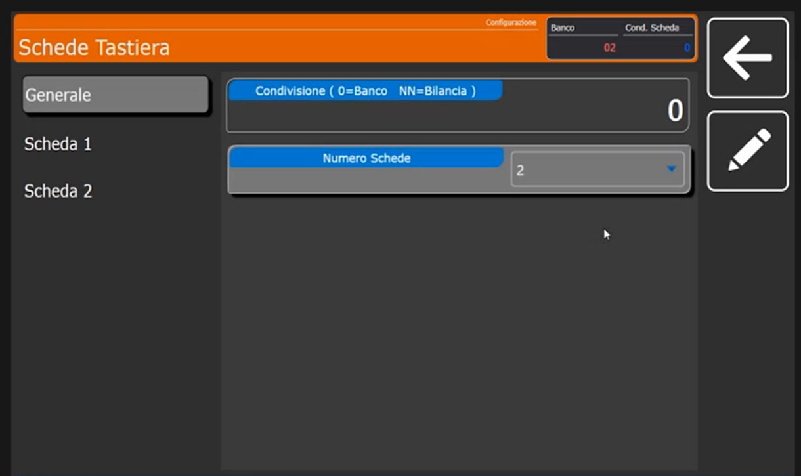
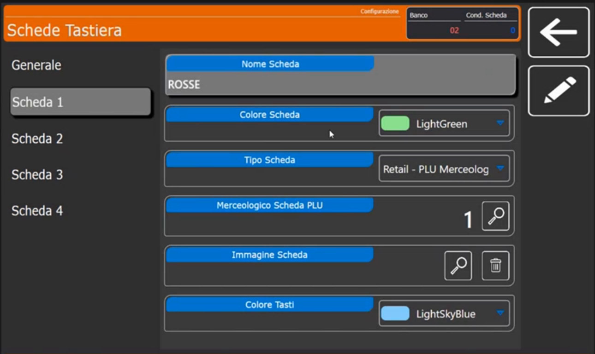
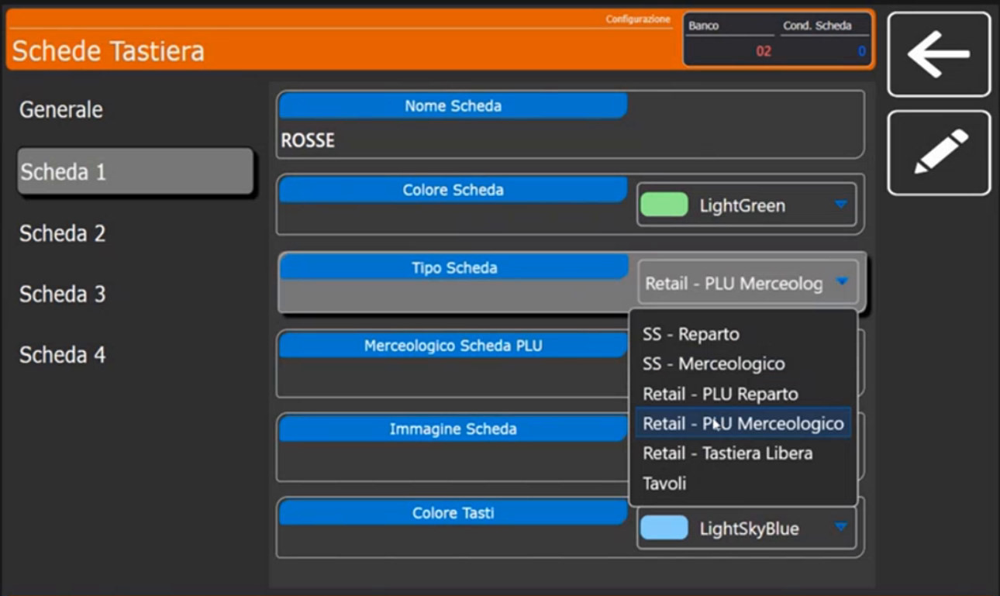
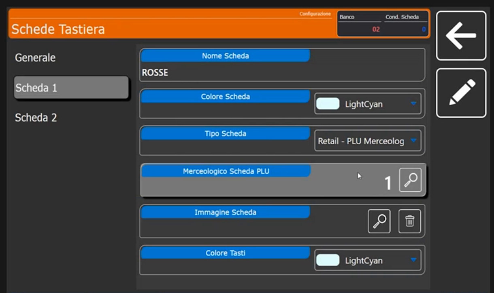
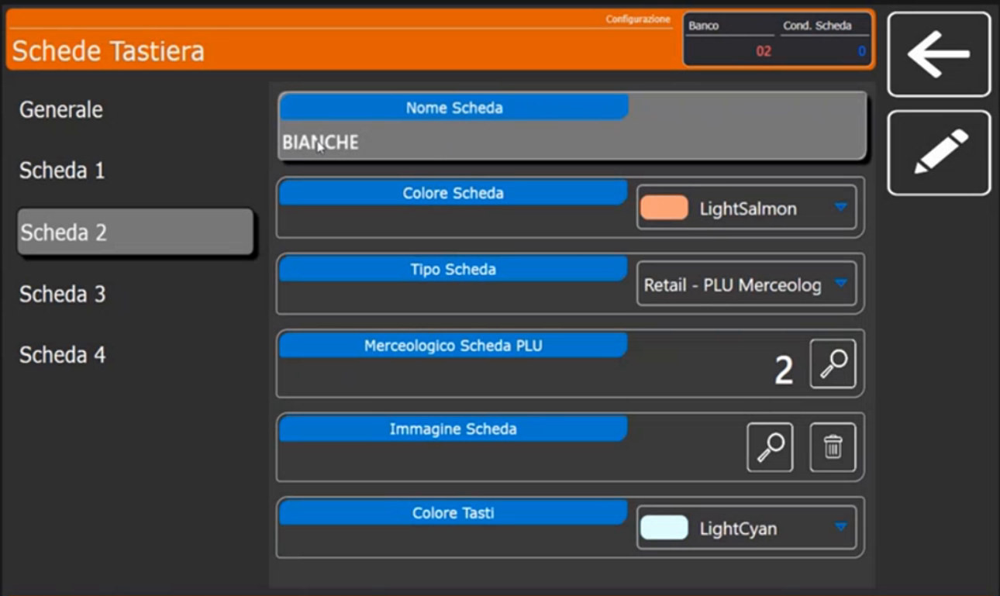
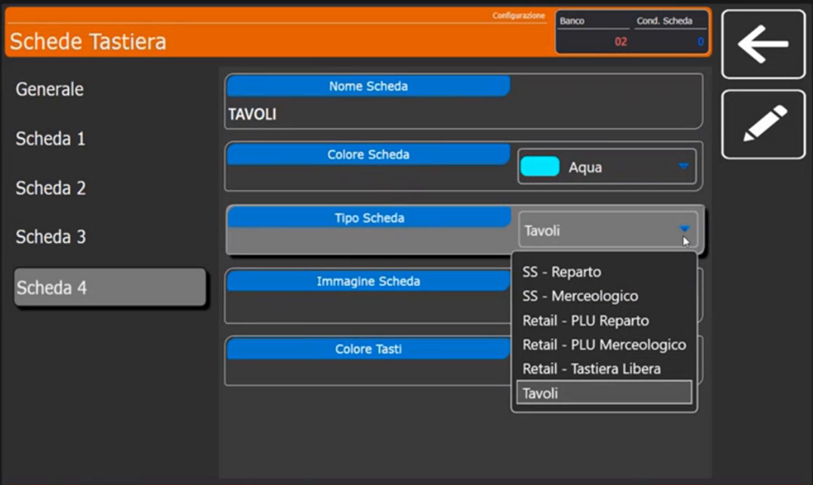
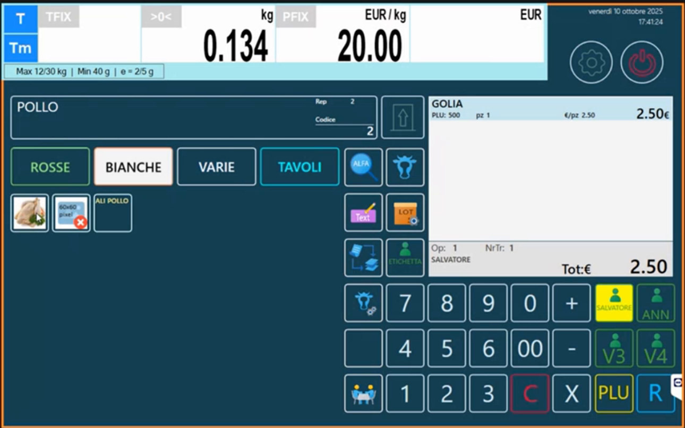

Schede Tastiera: raggruppare gli articoli per categoria, reparto o tavoli
Target: tecnico installatore / rivenditore.
Obiettivo
Attivare le schede sulla tastiera, crearne una per ogni categoria merceologica (o per reparto, o per i tavoli) e personalizzarne colori e immagini, così che gli articoli non siano tutti sulla stessa schermata.
Prerequisiti
- Le Categorie Merceologiche esistono e sono collegate agli articoli (scheda Extra, Gruppo Merceologico: Articoli PLU).
- Il Tipo Tastiera è RETAIL => 4 Operatori o una variante Retail (Configurazione Operativa).
Quando usare le schede
Avere tutti gli articoli sulla stessa schermata oppure raggrupparli per scheda è una scelta di configurazione. Le schede si attivano sia in Self Service sia in Multipesata e, con il tipo di scheda giusto, permettono anche di gestire i tavoli o di passare da un reparto all'altro.
Procedura
1. Apri Schede Tastiera
Dal menu Setup Bilancia, sezione Configurazione, scorri la lista oltre Configurazione Tastiera: compare Schede Tastiera.

La lista ha le colonne Cond. Scheda (condivisione) e Numero Schede.

2. Crea le schede e indica quante sono
- Tocca +: si apre il tastierino Condivisione ( 0=Banco NN=Bilancia ). Digita 0 per schede relative al banco.
- Nella scheda Generale il campo Numero Schede indica quante schede devono esistere (nell'esempio 4). Nel menu a sinistra compaiono Scheda 1, Scheda 2... in numero pari a quello scelto.


Quante schede e che dimensione
Si possono avere fino a 16 schede. Con poche schede (per esempio fino a 4) i tasti di raggruppamento sono più grandi e più facili da usare per il cliente; più schede si mettono, più il tasto di selezione diventa piccolo, perché lo spazio dedicato alle schede è delimitato.
3. Configura una scheda per categoria
Nel menu a sinistra tocca Scheda 1. I campi sono Nome Scheda, Colore Scheda, Tipo Scheda, Merceologico Scheda PLU (o Reparto Associato, secondo il tipo), Immagine Scheda e Colore Tasti.

- Nome Scheda: scrivi il nome (nell'esempio ROSSE).
-
Tipo Scheda: scegli come si comporta la scheda.

| Tipo Scheda | A cosa serve |
|---|---|
| Retail - PLU Merceologico | Raggruppa i PLU per categoria merceologica: è il caso d'uso più comune in Multipesata e Retail |
| Retail - PLU Reparto | Raggruppa i PLU per reparto: permette di passare con le schede dal reparto macelleria al reparto salumeria (e viceversa). In una rete di bilance, anche se fisicamente appartengono a reparti diversi, le bilance possono richiamare e vendere gli articoli di altri reparti |
| Retail - Tastiera Libera | Tastiera libera, senza raggruppamento automatico |
| SS - Reparto / SS - Merceologico | Per il Self Service: la scheda lavora a pittogrammi, per reparto o per merceologico |
| Tavoli | Gestisce i tavoli e i conti sospesi (Funzioni di vendita) |
Gli altri campi:
-
Merceologico Scheda PLU: con la lente abbina la scheda alla categoria (nell'esempio ROSSE, codice 1). È un collegamento bilaterale: il nome della scheda è connesso al gruppo merceologico.

-
Colore Scheda e Colore Tasti: personalizzazione estetica con un menu a tendina di colori (nell'esempio LightGreen, LightSkyBlue, LightSalmon, LightCyan, Aqua).
- Immagine Scheda: serve quando usi la scheda in Self Service per il raggruppamento; in Retail non serve.
4. Configura le altre schede
Ripeti per ogni scheda. Per le BIANCHE il Merceologico Scheda PLU è il codice 2, con colori diversi.

Ogni scheda può avere un utilizzo diverso. Per esempio la quarta scheda si chiama TAVOLI, ha Tipo Scheda Tavoli e non è collegata a un merceologico, perché serve a raggruppare i tavoli che si gestiscono direttamente dalla bilancia.

Verifica
Esci dal configuratore e torna in vendita. Sulla tastiera compaiono i pulsanti di scheda ROSSE, BIANCHE, VARIE, TAVOLI. Selezionando una scheda compaiono gli articoli collegati alla sua categoria: MACINATO e POLPETTONE RIPIENO sotto ROSSE.

Selezionando BIANCHE compaiono gli articoli delle carni bianche (nell'esempio con le immagini sui tasti). La bilancia mostra il messaggio Programmazione Bilancia .... quando riapplica la programmazione.

Gestione Elimina Code e Gestione Ordini
Nello stesso menu Configurazione trovi anche Gestione Elimina Code e Gestione Ordini: in questa configurazione di base non servono.
Errori comuni
| Problema | Causa probabile | Rimedio |
|---|---|---|
| Una scheda non mostra articoli | Gli articoli non sono collegati alla categoria della scheda | In Extra dell'articolo imposta Gruppo Merceologico |
| La scheda mostra gli articoli sbagliati | Merceologico Scheda PLU punta a un'altra categoria | Controlla il codice con la lente |
| Il tasto della scheda è piccolo | Troppe schede | Riduci il numero di schede |
| Non compaiono le schede | Tastiera diversa dalla Retail | Controlla il Tipo Tastiera in Configurazione Operativa |
Prossimo passo
Per gli archivi di supporto: Intestazioni, Operatori e Testi.